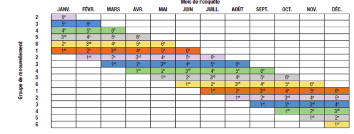
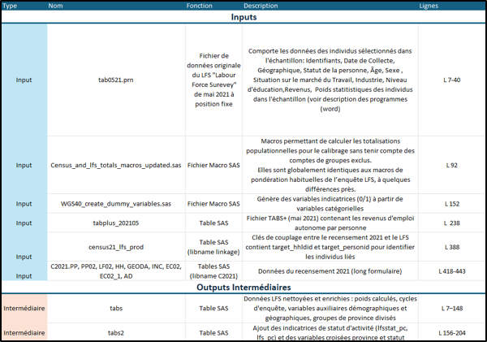
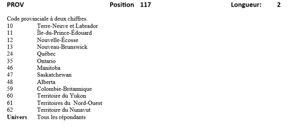
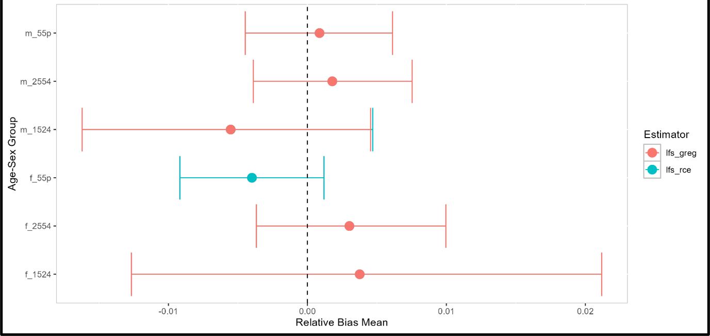

Optimisation de l'Enquête sur la Population Active (EPA)

L'Institution : Statistique Canada
Statistique Canada est l'organisme national de statistique du Canada (l'équivalent de l'INSEE en France). Il a pour mandat de produire des statistiques qui aident les Canadiens à mieux comprendre leur pays, sa population, ses ressources, son économie, sa société et sa culture.
Résumé du projet
L’Enquête sur la population active (EPA) est l’une des enquêtes clés de Statistique Canada, produisant entre autres le taux de chômage, un indicateur économique majeur. Le stage consiste à identifier les types de sources de données auxiliaires ayant le plus de potentiel pour minimiser l'erreur de non-réponse à l'enquête.
L'EPA et la mesure de l'erreur de non-réponse
L'EPA est une enquête mensuelle à plan de sondage complexe produite auprès de dizaines de milliers de ménages canadiens. Elle génère les statistiques officielles du marché du travail, comme le taux de chômage. Depuis la pandémie, son taux de réponse a chuté de 87 % à environ 70 %, soulevant un risque d'erreur de non-réponse : les ménages qui refusent de participer présentent potentiellement des caractéristiques différentes, ce qui peut fausser les estimations.
Taux de chômage par province (mars 2026)

Rotation mensuelle de l'échantillon EPA

La démarche repose sur un appariement entre les données de l'EPA et le Recensement (2016 et 2021). Un processus de calage séquentiel construit une source de référence à laquelle les estimations habituelles sont comparées. Deux estimateurs sont mobilisés : le GREG (Generalized Regression Estimator) et le RCE (Regression Composite Estimator), qui exploite le chevauchement entre mois consécutifs lié au système de rotation.
Missions réalisées
Compréhension des programmes développés sur les données de 2021, identification de la structure du pipeline et substitution des références pour adapter le code aux données de 2016.
Mise en correspondance des variables des deux millésimes du Recensement et de l'EPA. Identification et traitement des principales différences de codification entre les deux années.
Création d'un tableau documentant l'ensemble du pipeline de traitement : fichiers d'entrée, sorties intermédiaires et finales, avec description du rôle de chaque programme.

Rédaction d'une documentation technique complète décrivant chaque variable, sa position et ses modalités dans les fichiers sources, pour assurer la maintenabilité du projet.

Lancement séquentiel des programmes SAS, contrôle des sorties et résolution d'anomalies techniques : pondérations nulles en Alberta, problèmes de convergence du calage, erreurs dans le programme de calage du Recensement long.
Comparaison de l'erreur de non-réponse entre 2016 et 2021 à l'aide des estimateurs GREG et RCE. Expérimentation de nouvelles variables auxiliaires pour améliorer l'ajustement des poids.
Exemple de sortie, intervalles d'erreur relative par groupe âge/sexe

Compétences du programme national mobilisées
- Intégrer des sources de données hétérogènes, à travers l'appariement EPA et Recensement (2016 et 2021)
- Tester, corriger et documenter, gestion des anomalies SAS et rédaction du manuel technique
- Maîtriser un pipeline de traitement complexe à position fixe
- Comprendre la différence entre estimateurs, comparaison entre estimateur GREG et RCE selon le contexte
- Analyser l'évolution temporelle de l'erreur de non-réponse entre 2016 et 2021
- Apprécier les limites de validité, évaluation des variables auxiliaires
- Rédiger une documentation professionnelle rigoureuse, avec rédaction du dictionnaire de données et du manuel technique
- Adopter une posture professionnelle en milieu bilingue et institutionnel
- Communiquer et collaborer au sein d'une équipe de méthodologistes
- Appréhender un plan de sondage complexe, avec l'EPA à deux degrés et son système de rotation
- Mettre en œuvre un processus de calage séquentiel pour corriger la non-réponse
- Expérimenter des variables auxiliaires alternatives pour optimiser l'ajustement